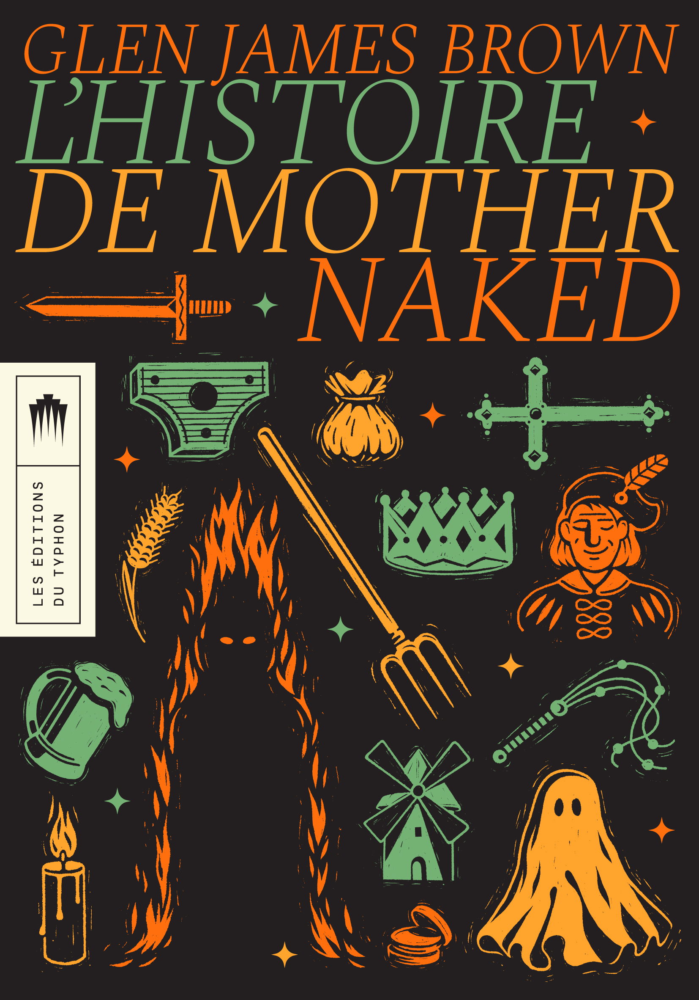
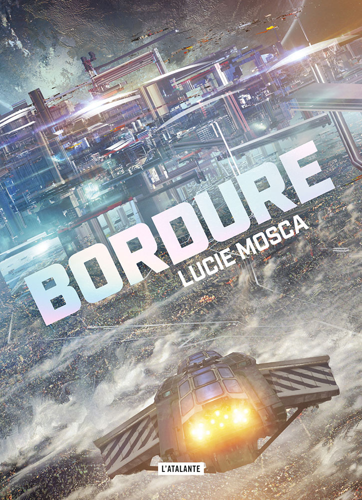
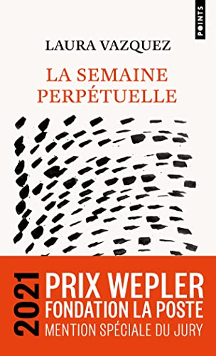
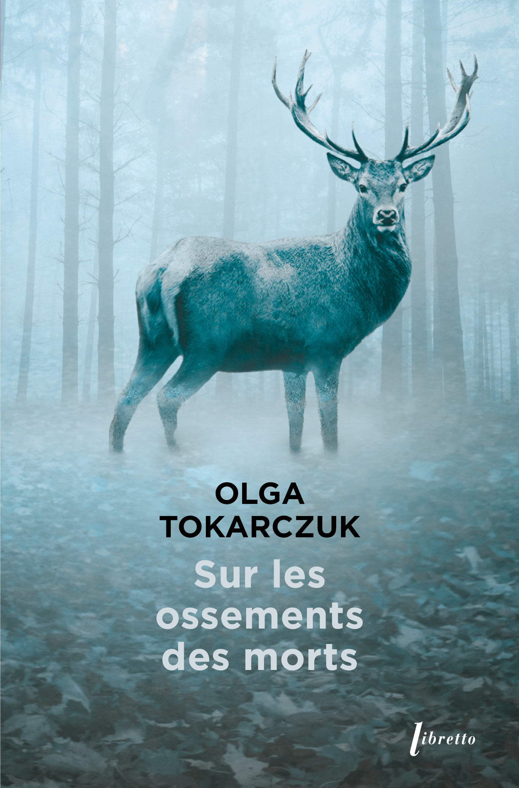
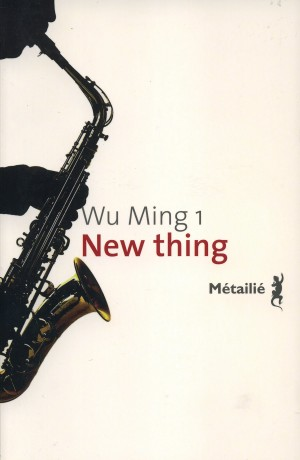

Je découvre le “Mid-Year Book Freak Out Tag”, terme barbare derrière lequel se cache la tradition de dresser une sorte de bilan livresque à mi-année en répondant à une série de questions. Vu que nous sommes déjà en août, je me limite volontairement aux livres lus jusque fin juin.

2. Meilleure suite ? Ça se joue entre Promotion funeste (second tome de la saga Scholomance de Naomi Novik) et La Miséricorde de l’ancillaire de Ann Leckie, et c’est clairement ce dernier qui l’emporte. J’ai beaucoup aimé cette conclusion aux Chroniques du Radch, splendide démonstration qu’il est carrément possible d’écrire de la science-fiction pertinente et exigeante de nos jours (c’est pas comme si j’avais spécialement besoin qu’on me le rappelle et les exemples ne manquent pas, mais ça fait toujours plaisir).

4. La sortie du deuxième semestre que j’attends le plus ? J’ai récemment appris que Phœbe Hadjimarkos Clarke sortait un nouveau livre à la rentrée, Le livre des souterrains aux éditions du Sous-Sol (!), et forcément ça m’intéresse vu comme j’ai apprécié Aliène. J’arriverai toutefois sûrement à différer l’achat compulsif en lisant d’abord Tabor, son premier roman, que je me suis récemment procuré d’occasion.
5. La pire déception ? Probablement Strange Pictures, de l’auteur japonais Uketsu. J’attendais quelque chose d’un minimum prenant et bizarre, pas cette espèce d’enquête un peu molle et sans grand intérêt.

7. Mon auteur.ice préféré.e (nouveau ou nouvelle pour moi) ? Après ma lecture de La semaine perpétuelle, j’ai écouté Laura Vazquez dans des podcasts comme Bookmakers et Continue tu m’intéresses et c’était passionnant. Laura Vazquez est une personne fascinante.

9. Un livre qui m’a fait pleurer ? Pleurer serait peut-être beaucoup dire (je n’ai pas eu cette chance), mais La patience de l’immortelle de Michèle Pedinielli m’a ému à plusieurs reprises. Déjà, le meurtre d’une jeune femme pleine d’avenir a quelque chose d’horrible. Ajoutez-y une petite fille de trois ans brutalement privée de ses parents, qui continue bravement sa vie au milieu d’une famille en deuil, et je fonds.

11. La plus jolie couverture ? J’en remets une couche sur L’histoire de Mother Naked, même si je l’ai lu en numérique et que je n’ai pas pu profiter de sa superbe couverture ni l’exhiber fièrement dans ma bibliothèque.
12. Mes priorités de lecture d’ici la fin de l’année ? Il reste quelques livres dans mon challenge “En sortir 26 en 2026” (Le marquis de Bolibar de Leo Perutz, Le magicien de Magdalena Parys,…) même si je ne me suis pas promis de le finir à 100%. Il y aura aussi Tabor, comme évoqué plus haut, et puis sûrement Jour de ressac, de Maylis de Kerangal.